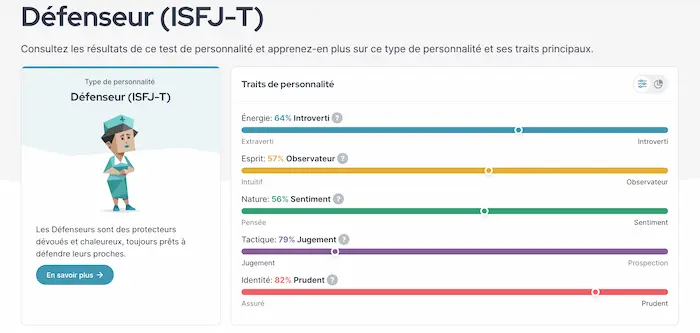
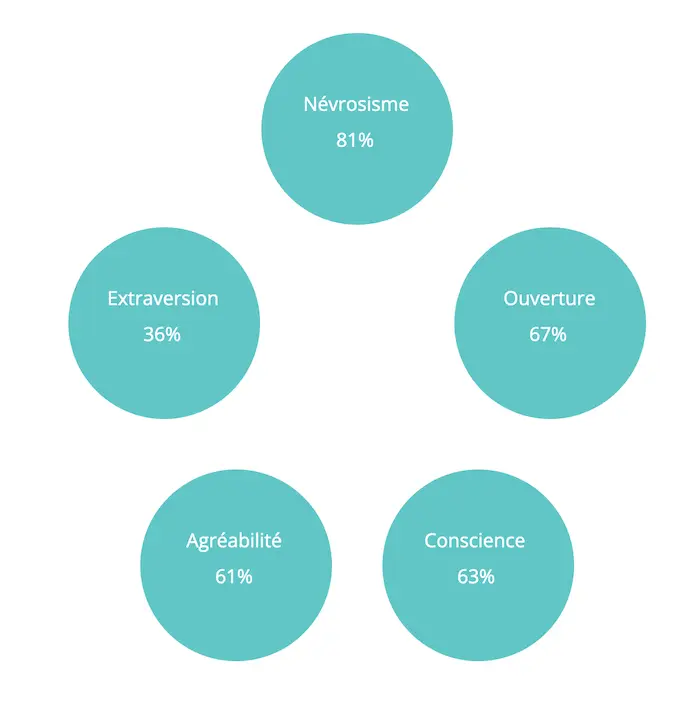

Mon profil de personnalité actuel
Publié le 15/03/2024 dans Bric à brac.
J’ai refait le test de personnalité sur ce site Voilà ce que ça donne :
J’ai répondu aux questions sincèrement, en essayant d’être la plus juste possible et à deux reprises. Je tombe toujours sur le même type de personnalité, même si la répartition des traits varie légèrement d’une fois à l’autre. Je suis donc un « défenseur ». Étonnament, lorsque je lis le decriptif détaillé de ce type de personnalité, je ne me reconnais pas du tout. Tout cela est mystérieux.
Le test de personnalité Big 5 me donne les résultats suivants :
Je ne suis pas certaine de sa fiabilité non plus. Je ne m’y reconnais pas.